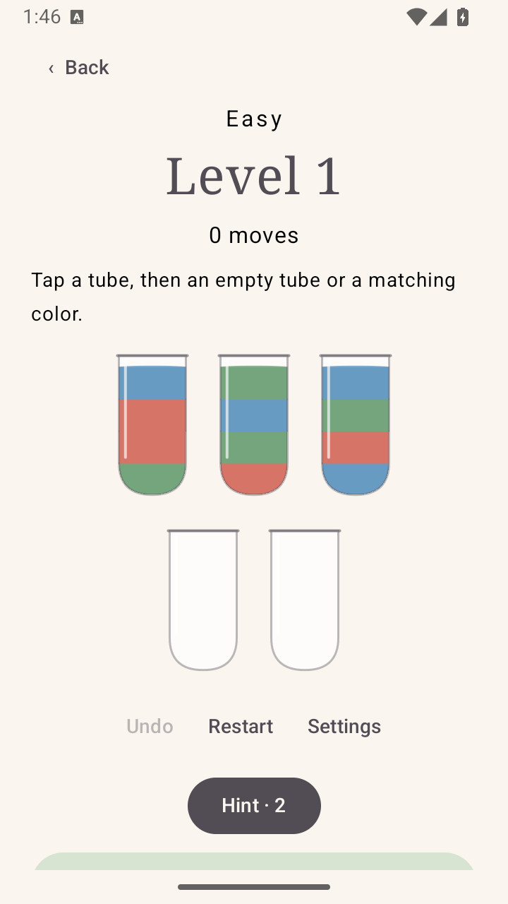
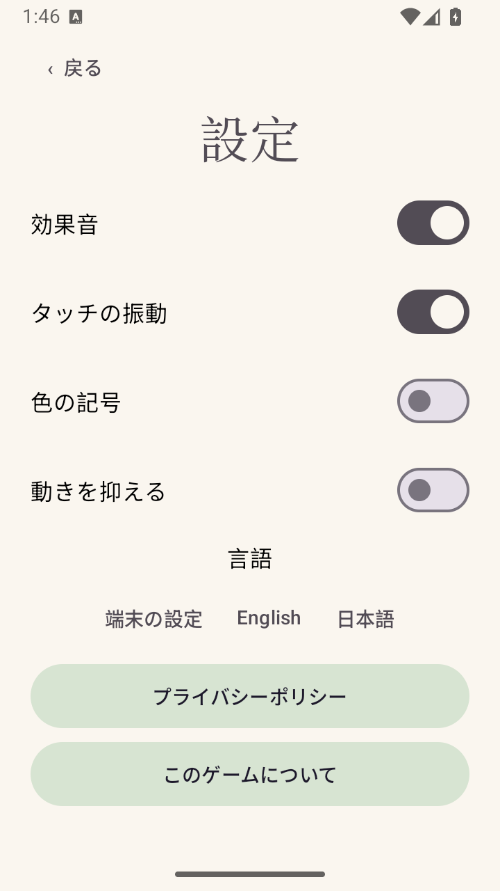

NobodyWorkshop · Developer press kit
Quiet Pour
Sort colours. Take your time.
A water-sort puzzle for Android: tap one tube, then another to pour matching colours. Make space, undo a move, and finish with one colour in each full tube.
View on Google PlayAt a glance
- Developer
- NobodyWorkshop · independent solo developer
- Platform
- Android · publicly released on Google Play
- Price
- Free to download; contains ads
- Package
- com.nobodyworkshop.quietpour
- Core play
- 1,200 starting puzzles checked for a solution; three to eight colours. No timer or energy meter. Unlimited undo and restart.
- Offline
- Every core puzzle can be completed offline without ad rewards. Advertising, external links and usage statistics have separate network behaviour.
- Options
- Numbered colours, reduced motion and sound off. English and Japanese UI.
- Contact
- service@gamebox.wiki
Advertising and privacy
Occasional ads may appear between levels. Optional rewarded ads can provide extra hints or a spare tube when available. The game is not ad-free. Usage statistics are optional and off by default; advertising and SDK data are covered by the current Google Play Data safety disclosure.
Current Data safety disclosure · Privacy policy
Original assets
These are developer-supplied captures from the game's release asset folder, not generated gameplay mockups. They show the core UI; screen details may differ in later builds. Open an image or download its original PNG.



Download original PNG


Download original PNG
Questions for a first play
- Is it clear which tube can receive a pour?
- Where does the difficulty feel too easy or too fiddly?
- Do numbered colours help, and do between-level ads interrupt the quiet mood?
Honest criticism is welcome. Public ratings are optional, with no reward or requested star rating. Editorial inclusion and review scores are entirely up to the reviewer.